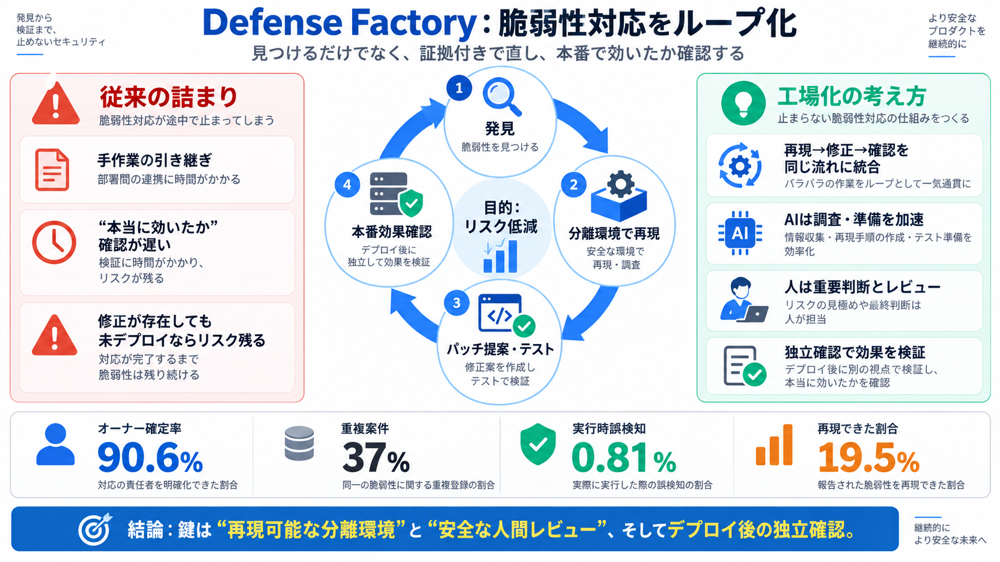

OpenAI Codex Security Scanned 1.2 Million Commits and Found 10,561 High-Severity Issues
According to the AI company, the latest iteration of the application security agent leverages the reasoning capabilities…

According to the AI company, the latest iteration of the application security agent leverages the reasoning capabilities…
Agents can now conduct long-running cyber operations by abusing increasingly available open-weight models. In response, …
Microsoft Microsoft is reorganizing its cybersecurity business around AI-assisted vulnerability discovery and automated…
now to translate these capabilities into better prevention, faster detection, and more effective incident response. [...…
Codex Security is the product manifestation of Daybreak. According to OpenAI's site, it: Codex Security workflow diagra…